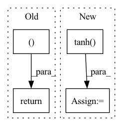

Pattern ID :3391

Before Change
action = action.tanh()
return action, std
if __name__ == "__main__":
use_cuda = torch.cuda.is_available()
After Change
log_prob = m.log_prob(action_base)
log_prob.unsqueeze_(-1)
action = action_base.tanh()
// According to "Soft Actor-Critic" (Haarnoja et. al) Appendix C
action_bound_compensation = torch.log(1. - action.tanh().pow(2) + 1e-6)
action_bound_compensation = action_bound_compensation.sum(dim=-1, keepdim=True)
In pattern: SUPERPATTERN
Frequency: 3
Non-data size: 4
Instances
Fragment ID: 17442878
Project Name: tmdt-buw/karolos
Commit Name: e8ce439013ace3e3e9647de55ed22ddf38f35396
Time: 2020-04-23
Author: scheiderer@uni-wuppertal.de
File Name: agents/nnfactory/sac.py
M Class Name: Policy
N Class Name: Policy
M Method Name: forward(3)
N Method Name: forward(3)
M Parent Class: nn.Module
N Parent Class: nn.Module
M File Name: agents/nnfactory/sac.py
N File Name: agents/nnfactory/sac.py
M Start Line: 103
M End Line: 115
N Start Line: 104
N End Line: 123
'>
Before Change
log_std = self.std_clamp(log_std)
return mean, log_std
if __name__ == "__main__":
use_cuda = torch.cuda.is_available()
After Change
action = m.sample()
action = action.reshape(mean.shape)
action = action.tanh()
return action, std
'>
Fragment ID: 17442877
Project Name: tmdt-buw/karolos
Commit Name: 39ca64b6106c80c48f0605a15cde575769fad233
Time: 2020-04-23
Author: scheiderer@uni-wuppertal.de
File Name: agents/nnfactory/sac.py
M Class Name: Policy
N Class Name: Policy
M Method Name: forward(3)
N Method Name: forward(2)
M Parent Class: nn.Module
N Parent Class: nn.Module
M File Name: agents/nnfactory/sac.py
N File Name: agents/nnfactory/sac.py
M Start Line: 100
M End Line: 102
N Start Line: 95
N End Line: 115
'>
Before Change
embedded = self.embedding(x) // (L, bs, E)
output, hidden = self.rnn(embedded) // (L, bs, H), (1, bs, H)
return output, hidden
// }}}
// DecoderRNN {{{
class DecoderRNN(nn.Module):
After Change
// x: (T, bs, H)
embedded = self.embedding(x) // (T, bs, E)
output, hidden = self.rnn(embedded) // (T, bs, 2H), (2, bs, H)
hidden = torch.tanh(self.f_concat_h(torch.cat((hidden[-2], hidden[-1]), dim=1))) // (bs, H)
return output, hidden.squeeze(0) // (T, bs, 2H), (bs, H)
// }}}
'>
Fragment ID: 17442880
Project Name: jojonki/beamsearch
Commit Name: 2a424a9181a3ddc12f4e4b5090b7542428efb30e
Time: 2020-05-04
Author: junki.ohmura@gmail.com
File Name: models.py
M Class Name: EncoderRNN
N Class Name: EncoderRNN
M Method Name: forward(2)
N Method Name: forward(2)
M Parent Class: nn.Module
N Parent Class: nn.Module
M File Name: models.py
N File Name: models.py
M Start Line: 25
M End Line: 25
N Start Line: 26
N End Line: 28